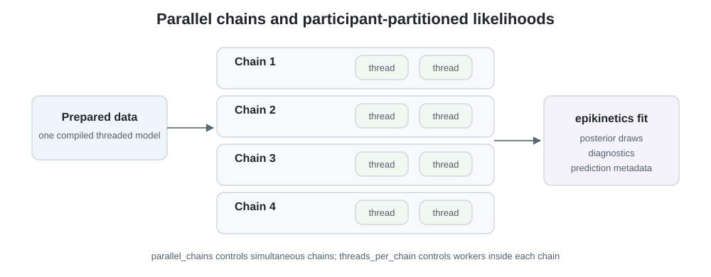

fit_epikinetics() receives a prepared-data object,
configures CmdStanR, and returns one fit containing the posterior run
plus everything needed for interpretation and prediction.

Parallel chains are independent MCMC runs. Within each chain, Stan’s reduce_sum likelihood partitions observations by participant across worker threads.
Run the sampler
fit <- fit_epikinetics(
prepared,
chains = 4,
parallel_chains = 4,
threads_per_chain = 2,
iter_warmup = 1000,
iter_sampling = 1000,
adapt_delta = 0.9,
seed = 2026
)parallel_chains controls how many chains run
simultaneously. threads_per_chain controls workers within
each chain; the model is always compiled with STAN_THREADS,
and its likelihood is partitioned by participant through
reduce_sum. The automatic grainsize is usually a good
starting point; change it only after benchmarking a representative
dataset.
adapt_delta, max_treedepth, and additional
CmdStanR sampling arguments remain available. More conservative controls
should respond to diagnosed geometry rather than replace model
checking.
Compilation and CmdStan access
Package installation and loading do not install CmdStan or compile a model. Install CmdStan explicitly with:
cmdstanr::check_cmdstan_toolchain(fix = TRUE)
cmdstanr::install_cmdstan()The first fit compiles a threaded executable in the user’s R cache; matching later fits reuse it. Missing CmdStan produces a setup-oriented error rather than an attempted automatic installation.
Advanced users can use the original CmdStanR object directly:
stan_fit <- cmdstan_fit(fit)
stan_fit$summary()
stan_fit$diagnostic_summary()
posterior_draws(fit)If chains fail, the package preserves the CmdStanR run whenever one exists:
cmdstan_fit(fit)$return_codes()
cmdstan_fit(fit)$output()Always continue to Diagnostics before interpreting parameters or trajectories.